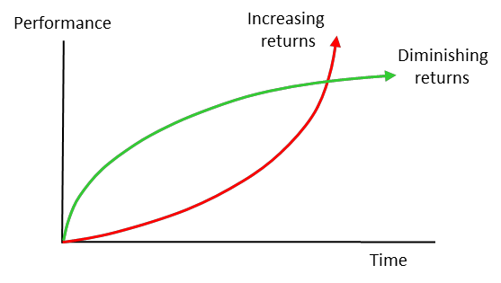
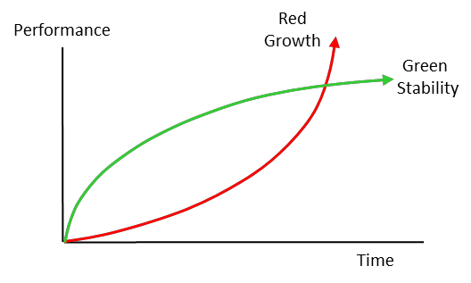

красная кривая - зеленая кривая (red curve - green curve) -
1. Набор кривых, представляющих два образа мышления: «убывающую отдачу» (зеленая кривая) и «возрастающую отдачу» (красная кривая) в отношении достижения организацией своей цели.
2. Совсем недавно зеленая кривая использовалась для обозначения цели стабильности, а красная кривая стала обозначать цель роста.
Иллюстрация 1.

Перспектива 1. Зеленая кривая представляет усилия по внедрению на местном уровне, где такая область, как производство, является организационным ограничением; сдерживающий ресурс идентифицируется и эффективно используется. Затем ограничение переходит к другой функции, и выполняется действие. Улучшенная область теперь имеет больше вместимости, чем нужно. В конце концов применяется мировоззренческое мышление, и в производственной сфере происходят увольнения, что убивает внедрение TOC, а организационная эффективность снижается. Красная кривая представляет целостную реализацию, в которой используются пять фокусирующих шагов, чтобы убедиться, что ограничения организации являются такими, какими они должны быть со стратегической точки зрения.
Иллюстрация 2.

Перспектива 2. В настоящее время считается, что организация нуждается как в стабильности (зеленая кривая), так и в росте (красная кривая). Компании должны стремиться к тому, чтобы их финансовые показатели (красная кривая) продолжали расти, при этом гарантируя, что финансовый рост не поставит под угрозу стабильность компании. Дерево стратегии и тактики дает рекомендации по достижению обоих необходимых условий.
Примечание АВ: 407 страница хендбука.
Примечание АВ: 1107 страница хендбука. Типы организаций
#парадигма
Синоним: red curve - green curve